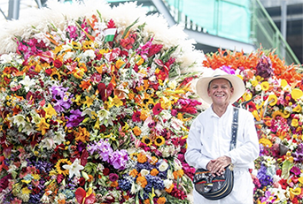
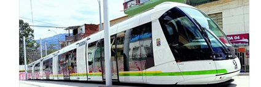
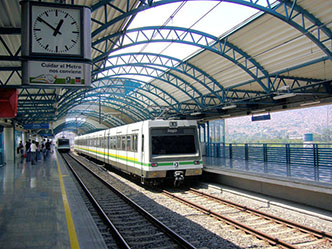
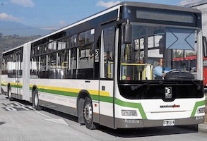
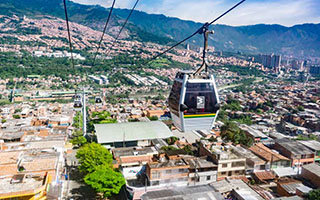

Medellín is the capital of the state of Antioquia in Colombia. The city has 1,980,917 inhabitants approximately and is known for its constant innovations and improvements. Medellín has a wonderful climate (comparable to Los Angeles) and has been called the City of Eternal Spring because of its weather.
Every year, in August, a traditional festival called the Flower Festival is celebrated in Medellín to commemorate the Antioquia's state culture and values. The main event of the Flower Festival is the Silletero Parade, where amazing beautiful wooden pieces are decorated with a thousand flowers of different kinds.

A male adult next to colorful silletas. These traditions are carried throughout their family for generations and the family's are mostly humble farmers.
Medellín has the only metro system in Colombia. The system includes an urban train, a bus of rapid transit, the metro-cable and recently the tram was inaugurated as part of the city's mobility system.

The tranvia had already existed in Medellín from 1887 to 1951. The system mobilized over 9,150 people per day.
Then in the fourth quarter of 2015 the Ayacucho Tranvia began working again. This system is electric and benefits 350 thousand people in downtown Medellín and the east side of the city.

The Medellín Metro is an urban train that crosses the city from North to South.
Below is the MetroPlus bus of rapid transit on the left and Metrocable gondola lift system, to facilitate mobility from the neighborhoods of the mountains of Medellín into the city, on the right.
 